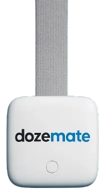
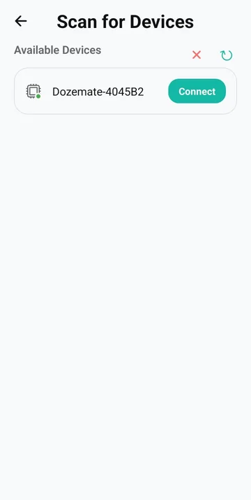
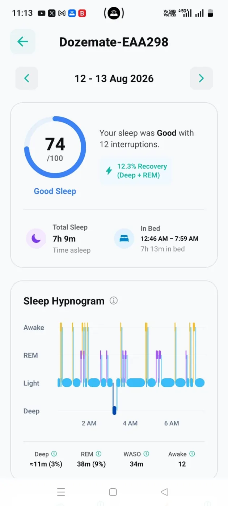
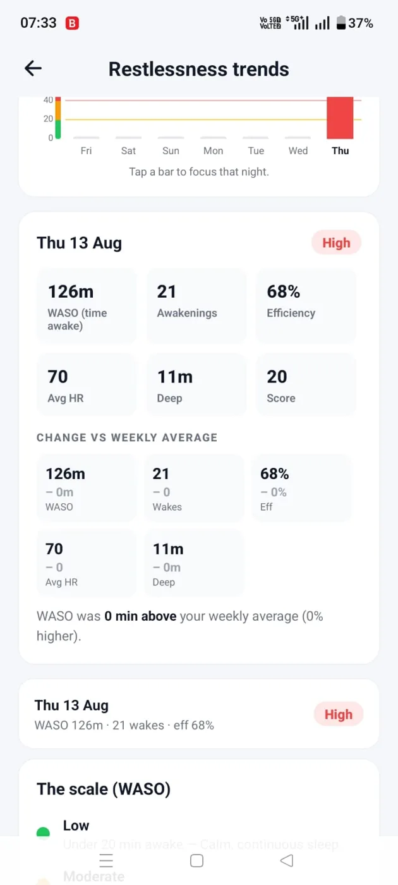
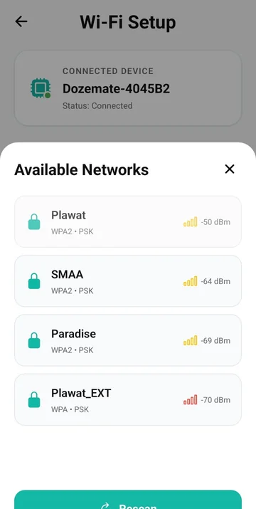
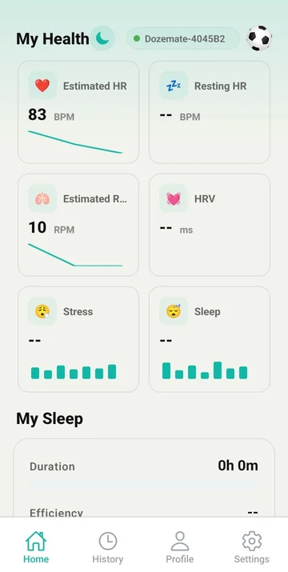
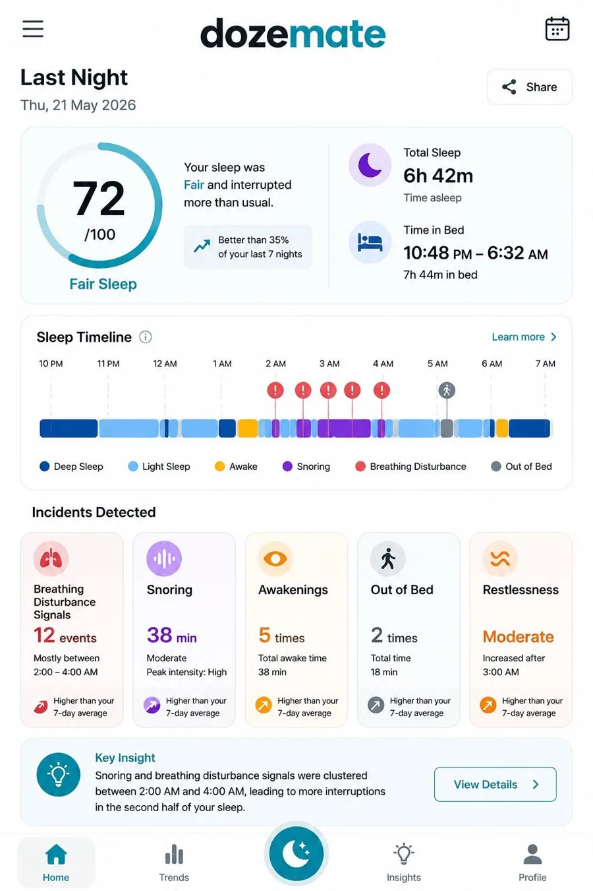

Case study · IoT sleep monitoring platform
Dozemate
The mobile app and dashboards that turn overnight sensor data into sleep stages, wellness trends and long-term history.
The device hardware and firmware are built by SlimIOT’s device teams. My work is the software: the mobile app, dashboards, cloud sync and the dozemate.com website.




01Overview
Dozemate tracks heart rate, HRV, respiration rate, movement and stress during sleep, and turns a night of readings into something a person can act on in the morning.
02Challenge
Overnight health data is only useful if it’s complete. A dropped connection or a failed sync leaves a gap in the night, and a sleep report with gaps is one people stop trusting. The app had to receive readings reliably from the device, keep them in step with the cloud, and present a dense night of data clearly on a phone.
Key challenges
- Keeping device-to-app sync reliable across a full night of readings
- Presenting dense overnight signals legibly on a small screen
- Keeping cloud history consistent with what the app shows, so long-term trends stay trustworthy
03My role
- Built the real-time device-to-app data sync pipeline for reliable transmission of health metrics
- Built the interactive sleep-stage and wellness-trend dashboards
- Built cloud-synced historical analytics for long-term health tracking
- Designed and developed the marketing website, dozemate.com
04Solution
A React Native app finds the device over BLE, receives readings in real time and syncs them to the cloud. Interactive sleep-stage and wellness-trend dashboards and long-term history sit on top of that data.
05Architecture
Dozemate sensor
Heart rate, HRV, respiration, movement, stress
Dozemate app
Device discovery, real-time sync, dashboards
Backend
Stores every night for history
Analytics
Sleep stages, wellness trends, long-term tracking
High-level data flow. Simplified for clarity.
06Key features
Device setup
Scan for nearby devices, connect and finish setup from the app.
Night summary
Sleep score, total sleep, time in bed and incidents for the night.
Sleep hypnogram
Awake, REM, light and deep stages across the night.
Trends & health
Night-over-night comparisons plus heart rate, HRV and stress tiles.
07Technology
08Screenshots



09Outcome
Dozemate is a live product: the app and the marketing site at dozemate.com are in production. Its sync pipeline and dashboards are what turn the sensor’s raw readings into a sleep report.